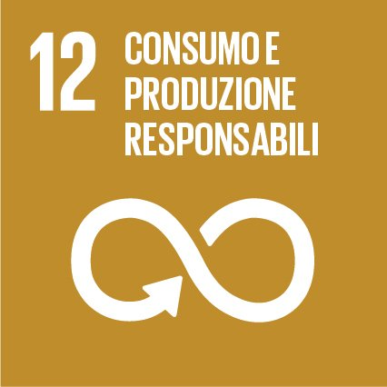
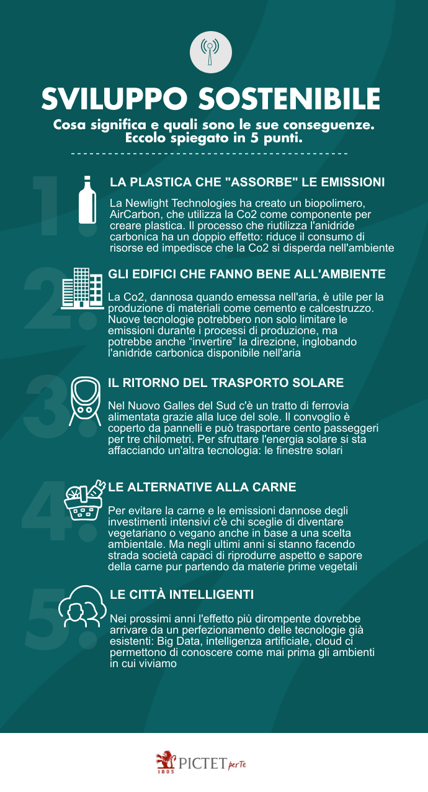

Obbiettivo 12

Consumo e Produzione Responsabili
Garantire modelli sostenibili di produzione e di consumo.
Serve quindi una nuova prospettiva su produzione e consumo, che potranno essere più
sostenibili anche grazie ad alcune innovazioni tecnologiche, come:
La plastica che “assorbe” le emissioni; l'anidride carbonica è stata identificata come il principale colpevole del riscaldamento globale e del cambiamento climatico, un'azienda americana ha creato un biopolimero che utilizza la Co2 come componente per creare plastica. Questo processo ha un doppio effetto: riduce il consumo di risorse ed impedisce che la Co2 si disperda nell'ambiente;
Gli edifici che fanno bene all'ambiente; la Co2 è utile per la produzione di materiali come cemento e calcestruzzo, lo sviluppo di nuove tecnologie potrebbe limitare l’emissione e anche, “invertire” la direzione inglobando l'anidride carbonica; trasformando, così, gli edifici in depuratori;
Il ritorno del trasporto solare; nel Nuovo Galles del Sud c'è un tratto di ferrovia alimentata grazie alla luce della nostra stella, il convoglio è coperto da pannelli e può trasportare cento passeggeri per tre chilometri; poco, ma abbastanza da far sperare nella riscoperta del solare applicato ai trasporti (di mare, di terra e aerei);
Le alternative alla carne; Gli allevamenti intensivi producono grandi quantità di emissioni dannose, ma negli ultimi anni si stanno facendo strada società capaci di riprodurre aspetto e sapore della carne pur partendo da materie prime vegetali (es. Beyond Meat e Impossible Foods);
Le città intelligenti; la vera anima delle smart city è la riduzione degli sprechi e la massimizzazione dell'efficienza, grazie a delle intelligenze artificiali che stanno permettendo di conoscere e di migliorare gli ambienti in cui viviamo, grazie alle informazioni disponibili in tempo reale.
